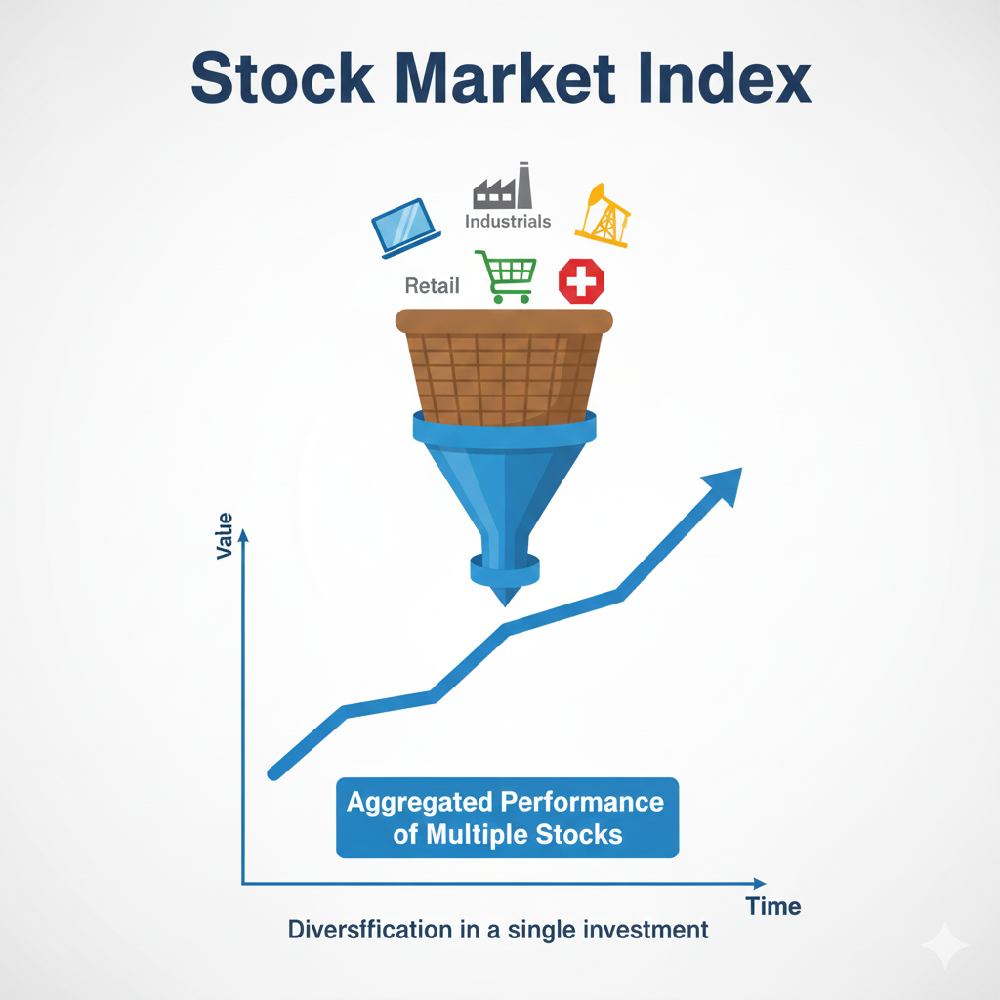

An index is essentially a statistical measure, or a "benchmark," that tracks the performance of a specific group of stocks. Instead of looking at every individual company, economists and investors use these indexes as a shorthand way to gauge the health of the broader economy or a specific sector. Think of an index as a thermometer for the financial markets; it doesn’t tell you everything about every patient in the hospital, but it gives you a very good idea of the general environment.
Understanding the differences between the major indexes—specifically the S&P 500, the Dow Jones Industrial Average, and the NASDAQ—is a foundational skill for any learner. Each of these benchmarks uses a different methodology to select companies and calculate their value. By learning how they work, you can better interpret financial news and understand the context behind the numbers you see on your screen every day.
Table of Contents
What Exactly is a Stock Market Index?
A stock market index is a curated list of stocks designed to represent a particular market or a portion of it. While there are thousands of publicly traded companies, it would be overwhelming to track them all simultaneously. To solve this, financial institutions create indexes by selecting a "representative sample" of companies. If those selected companies are doing well, the index goes up; if they struggle, the index goes down.
Indexes serve two primary purposes. First, they act as a barometer for the economy. When the major indexes are rising consistently, it often signals investor confidence and economic growth. Second, they serve as a benchmark. If an individual is managing their own portfolio, they might compare their personal performance against an index like the S&P 500 to see if they are doing better or worse than the average of the largest companies.
It is important to note that you cannot "buy" an index directly. Because an index is just a mathematical calculation, it isn't an asset you can hold in your hand. However, as we will discuss later, there are specific financial products designed to mimic the movement of these indexes. This topic connects deeply with Stock Market Basics, as indexes are the primary way we categorize market activity.
The S&P 500: The Gold Standard
The Standard & Poor’s 500, commonly known as the S&P 500, is widely regarded by financial professionals as the single best gauge of large-cap U.S. equities. It tracks 500 of the largest public companies in the United States. Because it covers approximately 80% of the available market value on U.S. exchanges, it provides a much broader view of the economy than smaller indexes.
Selection Criteria
A committee decides which companies enter the S&P 500. It isn't just a list of the 500 biggest companies; they must also meet certain criteria regarding liquidity, size, and profitability. For a company to be included, it must be based in the U.S. and have reported positive earnings over the most recent four quarters. This ensures that the index represents the "healthiest" giants of the American business world.
Market Capitalization Weighting
The S&P 500 is a "market-capitalization-weighted" index. This means that larger companies have a bigger impact on the index's value. Market capitalization (or market cap) is calculated by multiplying a company’s share price by the number of shares outstanding. If a company like Apple or Microsoft has a market cap in the trillions, its daily price movement will move the S&P 500 much more than a company with a market cap of only ten billion dollars.
The Dow Jones Industrial Average: The Old Guard
The Dow Jones Industrial Average, often called "The Dow," is the oldest and most famous index in the world. Created in 1896, it originally tracked only 12 industrial companies. Today, it consists of 30 "blue-chip" companies that are leaders in their respective industries. These are the household names we interact with daily—companies involved in everything from retail and technology to finance and healthcare.
The Price-Weighted Method
Unlike the S&P 500, the Dow is "price-weighted." In a price-weighted index, companies with a higher share price have more influence, regardless of how large the actual company is. For example, if a company has a share price of $200, it will have twice the influence on the Dow as a company with a share price of $100, even if the second company is actually much larger in terms of total market value.
Understanding the components of the Dow is helpful when learning What Moves Stock Prices, as individual company news in these 30 giants can sway the entire index.

The NASDAQ: The Tech Powerhouse
The NASDAQ Composite Index tracks more than 3,000 companies that are listed on the NASDAQ stock exchange. Unlike the NYSE, which has a physical history, the NASDAQ was the world's first electronic stock market, and it has naturally attracted younger, tech-focused companies.
Technology and Growth Focus
The NASDAQ is heavily weighted toward the technology, internet, and biotechnology sectors. Because technology companies often grow faster than traditional industries, the NASDAQ is often more volatile—meaning it may rise higher during good times but fall further during market downturns. Investors look to the NASDAQ to see how "growth stocks" are performing relative to the broader economy.
Weighting Methods: Market-Cap vs. Price
The way an index is calculated (its "weighting") changes how it reacts to news. Market-Cap Weighting (used by the S&P 500 and NASDAQ) is generally considered the most logical method today. It assumes that if a company is worth $2 trillion, it is more important to the economy than a company worth $20 billion.
Price Weighting (used by the Dow) is increasingly rare. It ignores the size of the company and focuses only on the price of a single share. If a company does a "stock split" to make its shares cheaper, its influence on the Dow drops immediately, even though the company's total value hasn't changed. This is why many experts view the Dow as a historical curiosity rather than a precise analytical tool.
Why Do These Indexes Move Differently?
You will often notice days where the Dow is "up" while the NASDAQ is "down." This happens because of different sector exposures. If a major bank releases a bad earnings report, the Dow and S&P 500 will feel it because they have many financial stocks. The NASDAQ, however, might remain unaffected because it has very few banks in its index. By watching all three, you get a multi-dimensional view of what is happening in the economy.
How Investors Use Indexes as Tools
While an index is just a number, it has changed how millions manage their finances through "index investing." Instead of trying to pick individual winning stocks, many people choose Index Funds or Exchange-Traded Funds (ETFs).
An index fund buys all the stocks in a particular index in the exact same proportions. This provides instant diversification, which is a key pillar of Risk Management Fundamentals. Over long periods, many passive index funds have outperformed the majority of professional stock pickers, simply because they have lower costs and broad exposure to the growing economy.

Key Takeaways
- S&P 500: The most common benchmark for the overall market, tracking 500 large U.S. companies via market-cap weighting.
- Dow Jones (DJIA): A price-weighted index of 30 massive "blue-chip" companies.
- NASDAQ: A tech-heavy index of 3,000+ companies, often used as a gauge for innovation and growth.
- Weighting Matters: Market-cap weighting reflects economic footprint, while price weighting reflects share price.
- Index Funds: These allow individuals to gain broad market exposure with low fees and high diversification.
Conclusion
Stock market indexes are essential tools that turn a chaotic sea of data into actionable information. By understanding the S&P 500, the Dow, and the NASDAQ, you can look at a financial headline and understand exactly which part of the economy is moving and why. Whether you are using them as a "thermometer" to check the economy's temperature or as a "benchmark" to measure your own progress, these indexes are the foundation of modern financial literacy.
Educational Disclaimer:
This article is for educational and informational purposes only and should not be considered financial or investment advice. Investing involves risk.